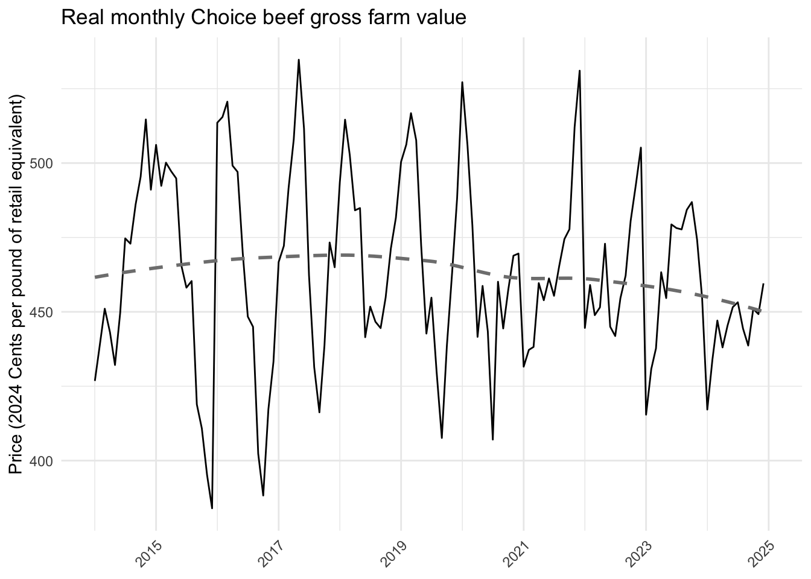
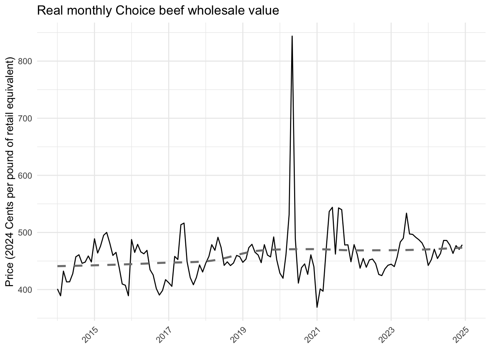
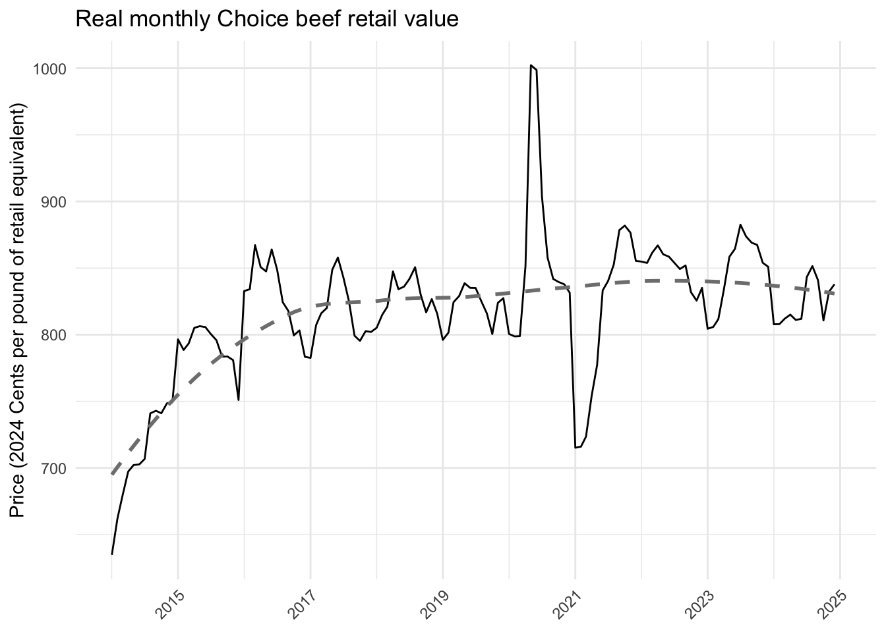

Final data: Pricing for beef along the supply chain .
ADD
Here we focus on price data for the last 10 years, where available. All prices are reported in 2024 dollars.
For prices at the farmgate, we use the producer price index by commodity: Farm products: Slaughter Cattle(“WPU0131.csv”) to put all beef price data in 2024 dollars.
Citation: U.S. Bureau of Labor Statistics, Producer Price Index by Commodity: Farm Products: Slaughter Cattle [WPU0131], retrieved from FRED, Federal Reserve Bank of St. Louis; https://fred.stlouisfed.org/series/WPU0131, August 17, 2026.
For retaila and wholesale prices, we use the Producer Price Index by Commodity: Processed Foods and Feeds: Meats (WPU0221)(“WPU0221.csv”).
Citation: U.S. Bureau of Labor Statistics, Producer Price Index by Commodity: Processed Foods and Feeds: Meats [WPU0221], retrieved from FRED, Federal Reserve Bank of St. Louis; https://fred.stlouisfed.org/series/WPU0221, August 17, 2026.
We compute an average yearly PPI and then use that to convert all dollars into 2024 dollars. We keep data starting in 2014.



Using data from the USDA AMS Livestock, Poultry, and Grain Market News, New York Dept of Ag Mrkt News, Feb 5, 2025, we estimate the increased cost of organic beef at the farmgate.
Data are pulled from Slaughter Cattle, Dairy Cows, we use DAIRY COWS - Lean 85-90% (Per Cwt / Actual Wt) as it has the largest sample size. The average price per cwt/actual wt for conventional is 116.98 and for organic is 118.78. Organic is 1.5% higher than conventional. We apply a 1.8% premium on farmgate organic prices.
Retail prices are found from the USDA AMS Livestock, Poultry, & Grain Market News, Weekly Grocery Store Beef Feature Activity, August 14, 2026. We apply the prices differences of conventional to organic to both retail and wholesale. We use the price of ground beef, Ground Beef 80-89%, 1-2 Lbs from the Previous Week (PW).
Conventional: 6.26 USDA Organic, fresh: 6.99
We apply a 11.7% premium on all retail and wholesale organic prices.
We need to characterize the relationship between cull rate and the relationship between milk and beef prices. Monthly price data for farmgate milk and beef prices.
Milk prices received (dollars per cwt) are from USDA NASS. Prices are reported in 2024 dollars using the Producer Price Index by Commodity: Farm Products: Raw Milk (WPS016).
Change once I get a better source of data. For now, I’m using the data provided above.
For the model, we include one worksheet with differentiated prices, one with commodity beef prices at each level of the supply chain. These prices are an average of the prices from 2022-2024. All prices are in 2024 dollars.
Convert all prices into $/kg. 1 kg = 2.20462 lb
cents/kg=cents/lb×2.20462
$/kg=100cents/lb×2.20462
We also keep a table with all of the data to be used for validation.
We use data from the restricted access 2022 Census of Agriculture to paramertize agents in the model. Exported data and code used to generate results.
The sample of farms include farms in New York with primary commodity dairy and at least $1,000 in sales.
The sheet titled “summary” includes summary statistics (mean/standard error) for a variety of different farm-level characteristics by scale and MWBE.
The sheet titled “metadata” contains definitions of all variables and the sheet titled “info” describes the data at a high level along with the sample.
Notes: Operations with less than 1,000 in sales are dropped, if N<5 it is not included, (D) indicated not included due to disclosure risk.
All of the data from this file will be used to inform the supply chain of the ABM model.
Processors We include all USDA inspected meat processing facilities
The following information is needed for all businesses:
Auctions We define a list of livestock auctions in New York from
Wholesalers and Distributors We define the list of wholesale/distributor businesses from the SimplyAnalytics database of businesses located in New York State (NYS) that could carry beans. We assume that any wholesaler/distributor can carry MWBE identified product or local identified product. We also assume that wholesalers in NYS can supply all product demanded by New York City (NYC).
The only businesses that are explicity included in the model are those that are identified as MWBE businesses or those that sold to NYC previously.
Location All data sets have information on if the business is located in NYS or not
Address We include an address for each business and then convert this to latitude and longitude coordinates to be included in the map. This data is not available for the majority of businesses so addresses are gathered and input manually.
Role in the supply chain For those businesses that are wholesalers/distributors, we have that information in all data sets.
Has the business sold to NYC Any business that is in the NYC data we indicate has sold to NYC, we assume all other businesses have not.
MWBE These data are listed in the NYC data and the interview data. For the SimplyAnalytics data, in order to determine if businesses are MWBE, we use a New York State database and a NYC database.
Works with local farms Businesses that sell locally are assumed to be those that were interviewed as part of this project and those found in the Vendor Contact List in the NY Food Product Database.
Max inventory This represents the maximum inventory that can flow through the businesses. If there is no supply contraints then we use the number of pounds of beans that NYC purchased as the max inventory with the goal that this number makes it so there is no constraint on how much the business can purchase in the model.
Organic We assume that all wholesalers/distributors can carry organic producers. Organic processors are identified in FSIS data if organic is in their name, there is no formal identifier in the data.
We pull publicly available data from the U.S. Department of Agriculture, Food Safety and Inspection Service USDA FSIS), Meat, Poultry and Egg Product Inspection Directory. The data is updated weekly and downloaded on 5/15/2026.
We keep only those establishments that listed activities livestock slaughter or livestock processing.
The Meat, Poultry and Egg Product Inspection (MPI) Directory is a listing of establishments that produce meat, poultry, and/or egg products regulated by FSIS. The Establishment Demographic Data includes additional establishment information about FSIS regulated establishments, including size, species slaughtered and aggregate categorical production information. These data are updated weekly, and the current edition replaces all previous editions.
Size The size of the establishment based on the business class. The options are Large, Small, and Very Small. Note: This variable does not correlate highly with production volume.
We create a list of livestock auctions from three sources:
Data is imported from each source and aggregated into one file.
This data is used for the wholesale businesses.
Simply Analytics is a web-based mapping application that allows users to map bushiness by name or by industry. Data are available to Cornell researchers through the Management Library. We collected data from (ADD YEAR) on the NAICS codes that are relevant to processing, distribution and wholesaling of dry beans, beef and leafy greens.
We use data aggregated at the 6-digit NAICS code.
The NAICS codes of interest for us include:
Supply chain role For the the processing sectors of the supply chain, we specify the commodity, and for the wholesale/distribution sectors we assume the sell all three commodities.
Located in NY or not We create a dummy variable with a 1 if in NY and 0 otherwise. All of these businesses are located in NYS.
Overall, we use the NYC purchasing data to get a list of processor businesses that are located in NYS and have sold to NYC or are located outside of NYS but sell NYS source identified products to NYC.
We also include a list of wholesalers that we will match with the Simply Analytics database to add additional information to the existing Simply Analytics data.
Here we want the data from Citywide, which is what is downloaded when you download the full purchasing data from the NYC Food Policy Dashboard.
We keep all data relevant for the year 2023, based on primary food product category equal to beef. In these data we have company names but we do not have information on their location.
The column called ny_state_spend_y_n indicates if an item is grown, processed, manufactured, or distributed by businesses located within New York State. The challenge is that the data includes up to three companies per line (origin_detail, distributor, and vendor) and for all three of these only one value for ny_state_spend_y_n. Therefore at least one, but not necessarily all of these businesses are in NYS. We want to identify businesses that sold NYS identified products to NYC, but using these data, we can’t know which of the three businesses in each row was the one identified. As a first step, we assume all businesses in the row (i.e., origin_detail, distributor, and vendor) are assumed to supply NYS product.
We assume all businesses listed under origin_detail are processors and get the beef based on the products they sold and all other businesses are wholesaler/distributors.
We want to include all businesses from this data set that are located in NYS and all out-of-state businesses that purchased NY identified products and sold to NYC (i.e., ny_state_spend_y_n==“y”), indicated by the variable “nys_product_purchase” equal to 1 if purchased source identified NY product and 0 otherwise.
While we do have a column in this dataset that indicates MWBE, we do not know from this data which business along the supply chain is MWBE. But since we have a list of all certified MWBE businesses for NYC and NYS, we rely on that list to confirm if a business is MWBE or not (rather than using the NYC purchasing database).
We want to match data for all businesses listed. For each row there is a column called origin detail, distributor and vendor. We create a new column called company_name that includes all of the businesses listed in each column. We do not retain the columns pertaining to how much was purchased by NYC.
Here we take the NYC wholesale data information and join it with the Simply Analytics data.
We add addresses from the SA data to wholesalers that sold to NYC. And then we manually add in any missing addresses. This is one set of wholesale businesses that will be included in the model.
We use data the NY Food Product Database to identify businesses that sell New York branded products (lrfs==1).
Bean processors include any manufacturer that lists the following values for Sub Category: “Meat”.
We do not rely on the MWBE certification from this database as it is unclear whether is it for the processor or wholesaler. Rather we use the list of businesses certified MWBE by NYC and NYC.
Here we take the NY food product data base wholesale data information and join it with the Simply Analytics data.
We join the NYS and NYC MWBE certified businesses with all of our data sets.
New York State provides a database with all New York State Contractors that are certified MWBE and by New York City. We download the entire directory from both.
We select the following commodity codes:
We match MWBE to NY food database processor data and find one match.
All NYC purchasing data from a wholesaler will be in the SimplyAnalytics data.
Here we keep wholesaler data from SimplyAnalytics (with any additional information from other data sets included) and processor data from all other data sources.
Here we add in the columns for the address data that will be added manually. At this step, the data is saved as an excel file and then addresses and other missing information are manually added by the qualitative team. After these additions, the data is imported, geocoded and then exported in its final format.
The data that was saved in the step above was sent to the qualitative team and they manually added addresses, indicated those businesses that do not sell beans, added in data on the businesses location along the supply chain where missing (notably if the business was a primary or secondary processor), and estimated values for max inventory capacity.
We add the wholesale data that are MWBE to the data.
For addresses that the Census geocoder could not resolve, we use ArcGIS as a fallback via tidygeocoder. Results are merged back into the main data frame.
Here we save a full version and the version that can be shared publicly with business names and addresses removed. We also drop any columns that are not relevant.
We assume global demand is unlimited.
Final data: Total demand for New York State differentiated dry beans.
To determine to total market for NYS differentiated beans, four dry bean growers with food grade cleaning capacity who sell directly to buyers were contacted (interviews, emails, phone calls). Sales data was provided by the producer. (Numbers were confirmed to make sure they are not double counted in the totals).
We use data from NYC Food Policy, Good Food Purchasing data from 2019-2023, we download the full purchasing data set.
We provide average and standard deviation for price per lb. and kg. for dry beans by form (canned, dried, frozen), and by agency from 2019-2023. We drop data points where the price is more than two standard deviations outside of the average price.
Here we import data and define variables.
The missing data does have the number of units, but does not have weight in lbs. We can use the information provided about the product and estimate how much the product weighed and estimate a total weight.
Department of Education has a large purchase that lists number of unit. Units are #10 cans, we assume they each weight 6 lbs 15 oz (111 oz).
For now, we are not going to take this step, but can in the future if needed.
We removed outliers that were more than 2 standard deviations from the mean based on price per pound, within agency, year, and form. We dropped 17 observations (397 down to 380).
Data are pulled for purchases with no attributes that would allow for a higher price (i.e., not MWBE, not purchased from New York). Because we will run the model with different scenarios related to local and MWBE, the data of interest are the bean purchases of non-local and non-MWBE products (i.e., no premium, defined as NY State spend y/n==N and MWBE y/n == N). Note there are no purchases of beans from MWBE businesses in the data.
We group all agencies together and show average price per pound by type (bagged, canned). We change the name dried to bagged to be consistent with other figures.
Jasmine and Elsie add.